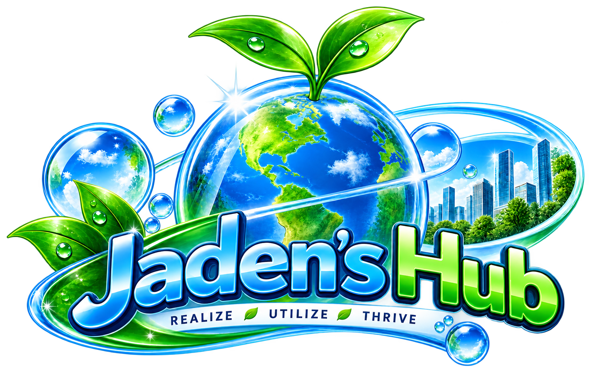
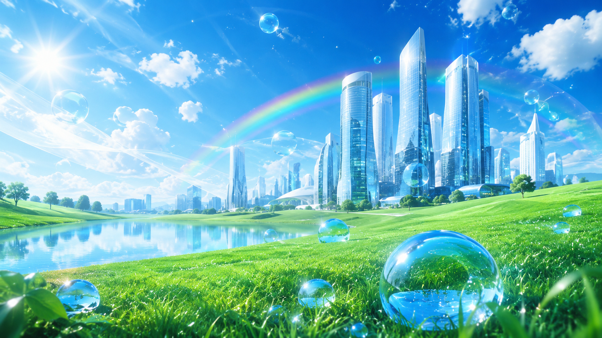
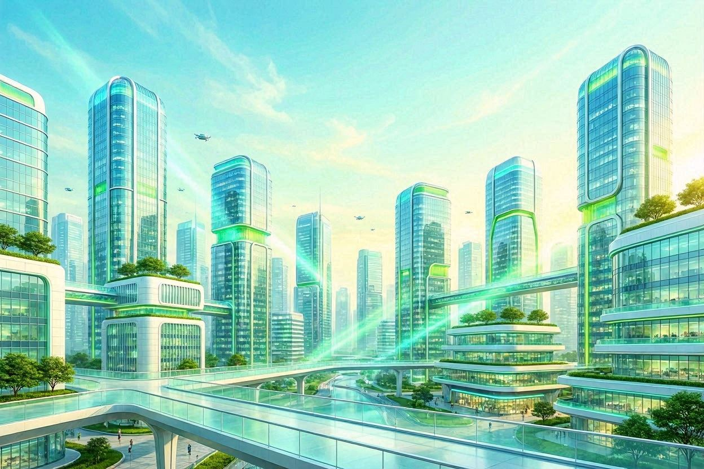
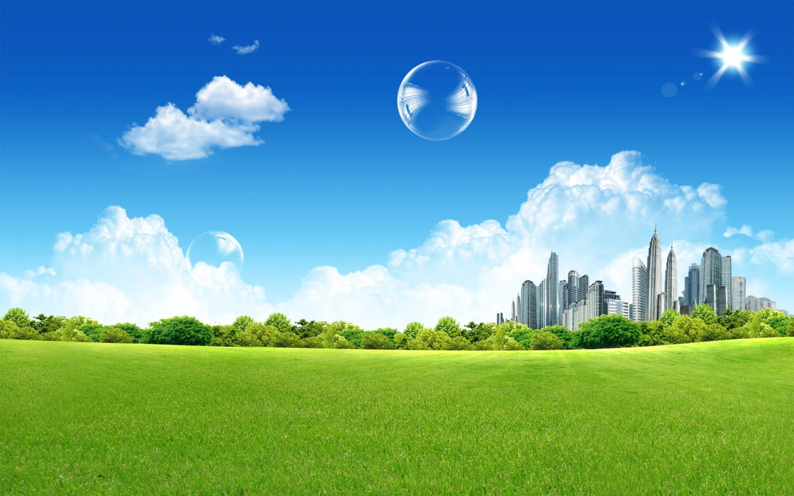
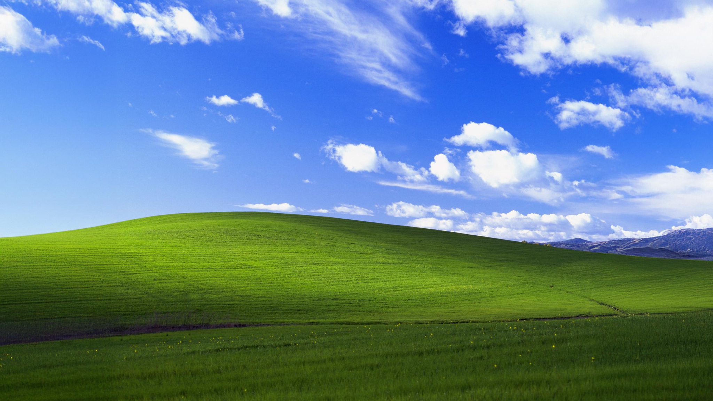

The visual world of Jaden's Hub
Gallery
A small collection of the artwork, backgrounds, and visual inspiration behind the site.

Jaden's Hub Branding
The main visual identity of the site, combining technology, growth, and Realize · Utilize · Thrive.

Frutiger Aero Future
A bright eco-tech landscape that captures the optimistic technology style behind Jaden's Hub.

Eco-Tech City
The futuristic city artwork used to give the About Me page its clean professional atmosphere.

Open-Sky Landscape
A simpler Frutiger Aero scene built around blue skies, greenery, bubbles, and an inviting city horizon.

Visual Inspiration
The classic green-hill-and-blue-sky look that inspired the site's nostalgic banner design.